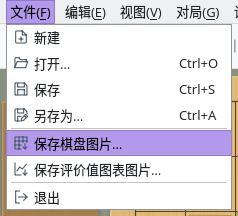
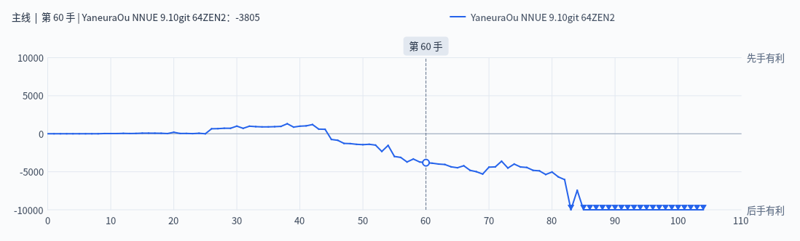

将棋盘和评价值图表保存或复制为图片
截图在 Linux 上以简体中文界面拍摄。
将棋盘和评价值图表按屏幕上显示的样子制作成图片
选择“文件”→“保存棋盘图片…”或“保存评价值图表图片…”即可把图片保存为文件。在选择保存位置的窗口中可以选择文件类型（PNG、JPEG、WebP、BMP、TIFF 等，可用的格式因环境而异）。默认位置是图片文件夹，文件名为“ShogiBoard_日期_时间.png”（评价值图表为“EvalGraph_日期_时间.png”）。
如果想不保存文件而直接粘贴到文档或图片编辑软件中，可以选择“编辑”→“复制棋盘图片”或“复制评价值图表图片”复制到剪贴板。复制的图片与保存的图片相同。

“文件”菜单：保存图片的项目
将形势变化保存为图表图片
评价值图表图片按“评价值图表”标签页中图表的当前大小制作。图中包含对局中引擎的评价值或棋谱分析的结果，以及当前着法的位置。
保存前先显示“评价值图表”标签页并调整面板大小，就能得到想要的图片大小。

导出的评价值图表图片（棋谱分析的结果，显示第 60 手）